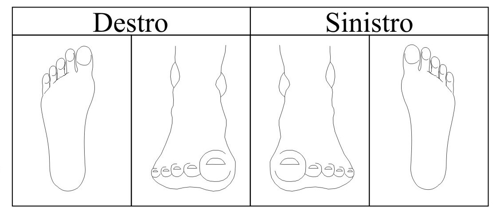

Compilazione Esame Clinico
Paziente: Caricamento...
Podografia
Note Podografia
Esame Obiettivo Podologico
Localizzazione Ipercheratosi
Localizzazione delle Ulcere

Altre Patologie Podologiche
Prove di Sensibilità Vibratoria
(Esame eseguito mediante Biotesiometer)
| Punti di Repere | Piede Destro | Piede Sinistro |
|---|---|---|
| Malleolo | ||
| Alluce | ||
| V Dito | ||
| I Metatarso | ||
| V Metatarso | ||
| Mesopiede | ||
| Calcagno |
Valore di riferimento < 25
Osservazioni
Questionario DN4
- Bruciante/Urgente:
- Freddo doloroso:
- Scariche elettriche:
- Formicolio:
- Punture di spillo:
- Intorpidimento:
- Prurito:
- Ipoestesia al tatto:
- Ipoestesia alla puntura:
- Sfioramento della pelle:
DOMANDA 1: Il dolore presenta una o più delle seguenti caratteristiche
DOMANDA 2: Il dolore è associato, nella stessa area, ad uno o più dei seguenti sintomi?
DOMANDA 3: Il dolore è localizzato in un territorio dove l’esame obiettivo evidenzia:
DOMANDA 4: Il dolore è provocato o accentuato dallo:
Punteggio DN4: 0 / 10
Scala NRS del Dolore
(Scala Unidimensionale 0-10)
Valore NRS Selezionato: N/D
Valutazione PGIC
Cambiamento percepito dal paziente rispetto all'inizio del trattamento
| PGIC | Attività Fisica | Sintomi | Emozioni | Qualità Vita |
|---|---|---|---|---|
| 7 - Peggioramento Notevole | ||||
| 6 - Nessun Cambiamento | ||||
| 5 - Miglioramento Minimo | ||||
| 4 - Miglioramento Lieve | ||||
| 3 - Miglioramento Moderato | ||||
| 2 - Miglioramento Buono | ||||
| 1 - Miglioramento Ottimo |
Punteggio PGIC Totale: 24 / 28
Riepilogo Punteggi
DN4: 0 / 10
NRS: N/D
PGIC: 24 / 28